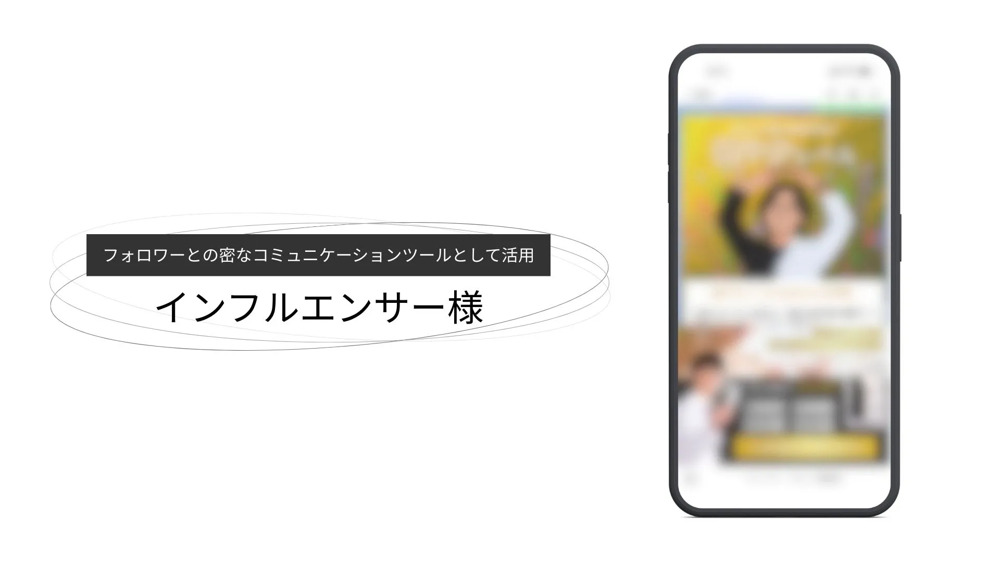
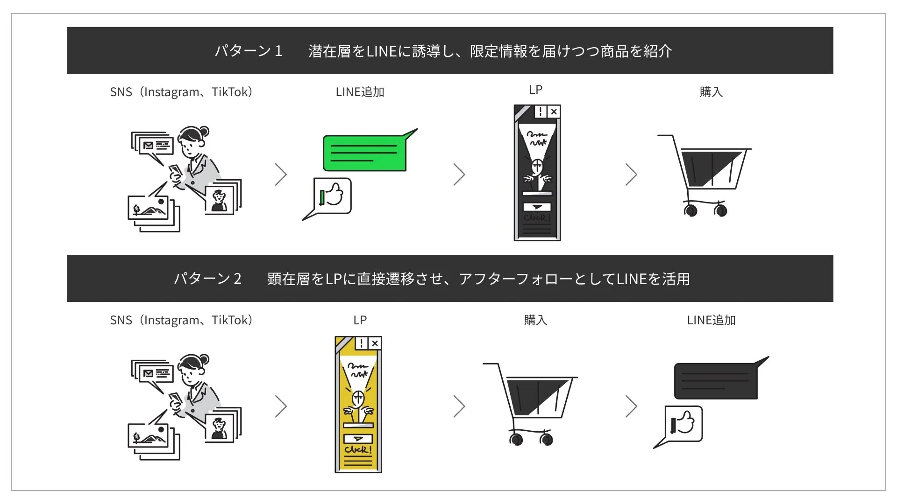
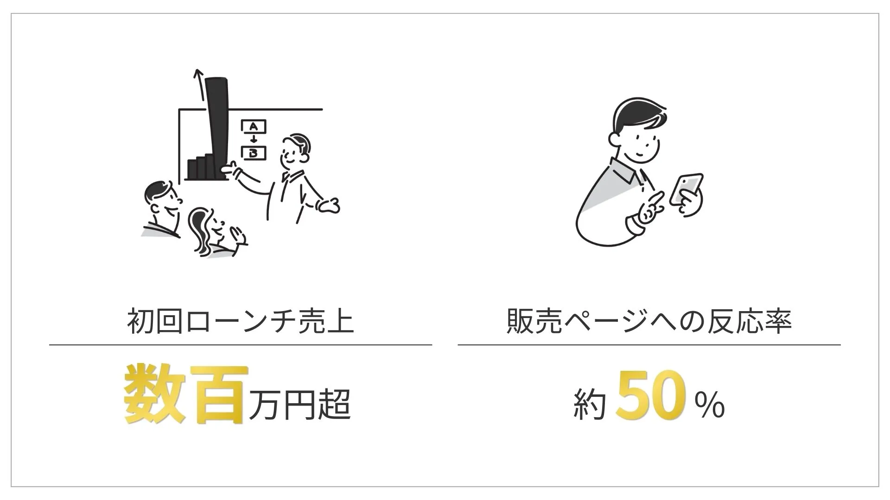

2025/3/13
総フォロワー100万人超のSNSとLINEを連動。プロダクトローンチから購入後フォローまでを一気通貫で設計し、初回販売で売上100万円超を達成

InstagramやYouTube、Xで100万人超のフォロワーを持ちながら、商品販売に向けた「先行予約〜販売〜購入後フォロー」の導線が整っておらず、SNSの集客力を売上に転換しきれていない状態だった。
NotreはLINEを軸としたプロダクトローンチ設計を担当。先行予約者と一般販売層をセグメントで分け、それぞれに最適化されたステップ配信・リッチメニュー・購入後導線をワンストップで構築した。
結果、先行予約者への販売開始通知で反応率50.84%を記録。初回販売の売上は100万円超（定期便契約ベース）に達した。
目次
クライアント紹介
| 項目 | 内容 |
|---|---|
| 業種 | 健康食品販売（腸活サプリ）／インフルエンサー |
| SNS規模 | Instagram・YouTube・X 合計フォロワー100万人超 |
| 販売モデル | BtoC・EC販売（定期便あり） |
| 課題の背景 | SNSでの発信力・信頼性は高いが、商品販売に向けた体系的な導線が未整備。フォロワーを購買につなげる仕組みが必要だった |
| 依頼内容 | 新商品（腸活サプリ）の発売に向けたLINEを活用したプロダクトローンチ設計と、購入後のアフターフォロー導線の構築 |
課題：導入前の状況
SNSのフォロワーが、購買につながっていなかった
100万人超のフォロワーを持ち、専門知識と信頼性をベースに継続的な情報発信を行っていた。新商品の開発を機に本格的なEC販売に乗り出したものの、「SNSで告知する→ECサイトで購入してもらう」という単純な導線では、関心を持ったフォロワーを取りこぼすリスクがあった。
具体的には以下の課題があった。
先行予約の興味関心層に対して、販売開始のタイミングを確実に届ける仕組みがない
購入後のフォローアップが手動または未整備で、定期便継続につながる接点が作れていない
SNSからの流入とカート購入データが紐づいておらず、顧客の全体像が把握できない
購入者とまだ購入していない見込み客が混在したまま同じ情報を送るしかない状態
施策：Notreが提案した解決策
① プロダクトローンチ設計（先行予約〜販売開始）
SNSからの集客を2つのパターンで設計した。
パターン1（購入→LINE追加） Instagram・YouTube・XのSNSからLPに着地し、商品を購入。購入後のサンクス画面および同梱チラシのQRコードからLINEに追加する導線。購入者をLINEに取り込み、リピート・定期便への引き上げに活用する。
パターン2（LINE追加→購入） SNS上でLINE追加を促し、先行予約者リストとして獲得。販売開始のタイミングでLINE経由でLPへ誘導し購入につなげる導線。関心層を事前に囲い込み、販売開始の瞬間に確実にアクションさせる設計。

この2パターンを組み合わせることで、購入前・購入後どちらの層もLINEに取り込める体制を整えた。
② セグメント別ステップ配信の設計・実装
先行予約の反応状況（URLタップ済み／タップなし）に基づき、ユーザーを自動でセグメント分類。それぞれに異なる配信内容・タイミングを設定した。
セグメント設計のポイントは、「先行予約でURLをタップした関心度の高い層」を事前に絞り込み、その層だけに向けて販売開始通知を送った点にある。
なお、ここでいう「反応」とは開封数ではなく、ユーザーが実際にボタンをタップするなどのアクションを取った数を指す。
先行予約開始の通知（全体配信）：2,904人に配信し、325人が反応
販売開始前の事前通知（先行予約・高関心層のみ）：414人に絞り込んで配信し、205人（約半数）が反応
販売開始の通知（先行予約・高関心層のみ）：415人に配信し、211人（約半数）が反応
在庫わずかのリマインド（一般販売層）：2,628人に配信し、162人が反応
全体に一斉配信するのではなく、関心度に応じてセグメントを絞り込んで届けることで、高関心層には2人に1人が実際にアクションを起こす精度の高い配信を実現した。
③ 購入後フォロー導線と顧客データの統合
購入後のサンクス画面と同梱チラシの両方にQRコードを設置し、購入者をLINEに誘導。LINE追加後に情報登録フォームを自動配信し、氏名・電話番号を取得する設計にした。
さらに、LINEで入力された情報とカートシステムのデータを裏側で突合する仕組みを構築。これにより、「誰が・いつ・何を購入したか」というEC側のデータとLINEの顧客情報が紐づき、定期便の継続フォローや次回購入の促進に活用できる顧客データベースを実現した。
④ リッチメニューの設計
LINEを開いた際にユーザーが迷わずアクションできるよう、商品情報・よくある質問・購入ページへの導線をリッチメニューに集約。購入前の見込み客にも、購入後のリピーター層にも使いやすいUIを設計した。
結果：導入後の変化

定量的な成果
| 指標 | 数値 |
|---|---|
| 初回販売売上 | 100万円超（定期便契約ベース） |
| 高関心層への販売開始通知 | 415人中211人が反応（約2人に1人） |
| 高関心層への事前通知 | 414人中205人が反応（約2人に1人） |
定性的な成果
SNSのフォロワーという「潜在資産」を、LINEというクローズドな接点に転換する仕組みが整い、次回以降の販売でも再現できる基盤が構築された。
購入者情報とカートデータの統合により、「誰が定期便を継続しているか」「誰がリピートしていないか」がLINE上で把握できるようになった。
先行予約者と一般販売層のセグメント分けにより、関心度に応じたアプローチが可能になり、無関係な配信によるブロックリスクを最小化できた。
同梱チラシからのLINE追加という購入後フォロー導線により、ECサイトだけでは取れなかった購入者との継続的な接点を獲得した。
今後の展望
初回販売で構築した「SNS集客→LINE誘導→購入→アフターフォロー」の一気通貫の仕組みは、次回以降の商品販売や別キャンペーンにそのまま転用できる再現性の高い資産となった。
カートシステムとLINEを統合した顧客データ基盤を活用することで、定期便継続率の向上・2回目以降の購入促進・使用感アンケートの自動配信など、LTVを高めるための施策を柔軟に展開できる状態が整っている。
本事例はクライアントの要望により、社名を匿名で掲載しています。
Pick up